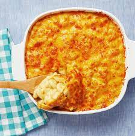

Mac and Cheese

Description
This homemade recipe is perfect for all ages and
will yield plenty of leftovers to be enjoyed all week.
Ingredients
- 8 oz. macaroni
- 3 tblspn butter
- 1/4 cup flour
- Salt, dry mustard, pepper, paprika
- 2.5 cups of milk
- 3 cups of medium cheddar Cheese
Steps
- Boil the pasta
- Preheat oven to 375 degrees
- Melt butter and add dry ingredients
- Stir in milk
- Whisk for 10 minutes
- Remove from heat and add two cups of cheese. Stir.
- Pour cheese sauce over noodles and bake for 30 minutes.
Return to main menu